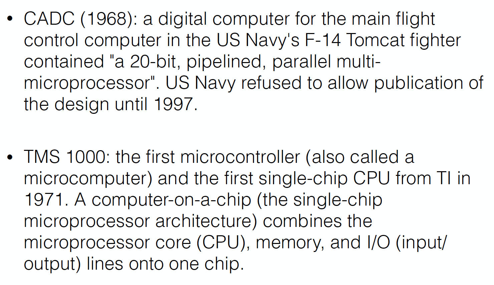

3rd
History of Microprocessors


Performance, density, power

More transistors with higher frequency
knee points around 2000 ~ 2005
hurdles to be tackled
- power
- temperature
\[ E = QV = \frac{1}{2}CV^{2} \]
\[ R \propto \frac{L}{A} \]
resistance는 length에 비례, 너비에 반비례
core 하나의 성능이 더이상 오르지 않으니 multi-core 체제로 전환
- 병렬 프로그래밍 문제 발생 → 인간은 병렬적으로 생각하지 못함
- deep learning과 같은 병렬 프로그래밍의 수혜를 받는 기술의 대두
Future of microprocessor
In the next 20 years
- package power/total energy consumption limits number of logic transistors
- organizing the logic - multiple cores and customization
- orchestrating data movement - memory hierarchies and interconnects
- pushing the envelope - extreme circuits, variability, resilience
- software challenges renewed - programmability versus efficiency
from Shekhar Borkar, Andrew A. Chien, 2011
Microprocessor internals
Control unit (CU)
decodes the program instruction in the IR, selecting machine resources such as a data source register and a particular arithmetic operation, and coordinates activation of those resources.
Arithmetic logic unit (ALU)
performs mathematical and logical operations
Register pile
Registers
Program counter (PC)
an incrementing counter that keeps track of the memory address of the instruction that is to be executed next or in other words, holds the address of the instruction to be executed next.
Memory address register (MAR)
holds the address of a memory block to be read from or written to
Memory data register (MDR)
a two-way register that holds data fetched from memory (and ready for the CPU to process) or data waiting to be stored in memory. (This is also known as the memory buffer register (MBR).)
Instruction register (IR)
a temporary holding ground for the instruction that has just been fetched from memory
ex) ARM7-TDMI structure

Execution cycle
Automatic execution of instruction
- Turing machine
- A machine that mechanically operates on a tape
- On this tape are symbols, which the machine can read and write, one at a time, using a tape head.
- Operation is a finite set of elementary instructions such as “in state 42, if the symbol seen is 0, write a 1.”
- Turing imagines not a mechanism, but a person whom he calls the “computer,” who executes these deterministic mechanical rules slavishly (or as Turing puts, “in a desultory manner”)

Instruction cycle
5 stage pipelined instruction cycle
Architecture = ISA (instruction set architecture) + IO (input/output)
fetching the instruction
The next instruction is fetched from the memory address that is currently stored in the program counter (PC), and stored in the instruction register (IR).
decode the instruction
The encoded instruction in the IR (Instruction Register) is interpreted by the decoder.
read the effective address
If the instruction has an indirect address, the effective address is read from main memory, and any required data is fetched from main memory to be processed and then placed into data registers.
execute the instruction
The control unit of the CPU passes the decoded information as a sequence of control signals to the relevant function units of the CPU to perform the actions required by the instruction.
Memory devices
Read only memory (non-volatile)
- ROM - programmed at factory
- PROM and EPROM - programmable and erasable ROM
- Flash memory
Random access memory (volatile) - SRAM, DRAM
Emerging memory technologies
- Phase-change memory (PCM) - STT-RAM, MRAM
I/O devices
Input devices - mouse, tablet, switches
output devices
- printer, relays
- displays - LEDs, CRT and TFT
input/output devices - hard disk
I/O methods
from/to microprocessor
- memory mapped I/O
- I/O mapped I/O
- interrupt
direct memory access